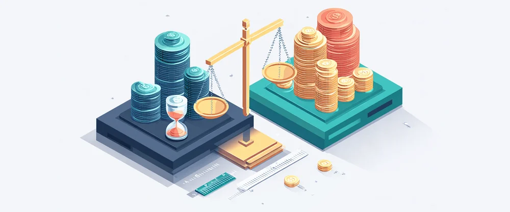

Pricing
AI顧問・AIコンサルティングの料金・顧問料（中小企業向け）
AI顧問・AIコンサルの料金相場や、AI導入にかかる費用を調べている中小企業の方へ。当社のAI顧問は、最初の3か月を見る業務の範囲で分けた定額の3コースで行い、4か月目からは月額の顧問で支えます。コースの範囲と含まれるもの、お支払いの方法、やめるときの決まりを、このページで公開しています。
価格はすべて公開しています。金額は特記のない限り税別で、主な金額には税込額も併記しています。2026年度の価格で、改定するときは2か月前までにお知らせします。最初の3か月は、1業務コース 月20万円（2人まで）・部門コース 月40万円（3人まで）・全社コース 月60万円（4人まで）の定額です。業務の棚卸しは、最初の1か月に行い、コースの料金に含みます。4か月目からは顧問として、月5万円・10万円・15万円で、1か月ごとの契約です。最初の3か月と、その後の顧問9か月分を合わせて、始める前に1回でお支払いいただく「1年まとめ払い」もあります。
書いた人：代表社員 苗村 晴基（合同会社Vaynexis） ／ 更新日：
料金を確認する：料金の早見 ／ 補助金の事前相談 ／ 3つのコース ／ 年商の目安 ／ 最初の3か月と顧問 ／ 支払と諸費用 ／ 単発の制作 ／ 料金のよくある質問

At a Glance
料金の早見：AI顧問・AIコンサルの費用はいくらか
| ご依頼 | 費用 | 補足 |
|---|---|---|
| まず相談したい | 0円 | 初回無料相談。1社1回、90分ほどが目安です。オンライン、または滋賀県内は訪問。ご希望があれば、削減の目安とコースもご説明します |
| 業務を洗い出して、AIに任せる最初の1業務を決めたい（AIコンサル） | コースの料金に含みます | AI顧問の最初の1か月に行う業務の棚卸しです。別にご請求しません。棚卸しだけのご契約はありません |
| AIを使いこなせるように、3か月で業務を整えたい（AI顧問） | 月20万円・40万円・60万円 | 最初の3か月の定額です。1業務コース（2人まで）・部門コース（3人まで）・全社コース（4人まで）（税別。税込は22万円・44万円・66万円）。最初の3か月が最低利用期間です。 |
| 整えた手順を保ち、続けて相談したい（4か月目からの顧問） | 月5万円・10万円・15万円 | 1か月ごとの契約です（税別。税込は5.5万円・11万円・16.5万円）。顧問の契約中は、単発の制作と次の3か月を10%引きでお受けします。 |
| 資料・小さな自動化・動画などを1件だけ作ってほしい | 1万円から | 単発の制作です。型ごとの決まった値段の一覧（税別）から選べます（Excel の自動化 5万円・業務マニュアル 20万円・解説動画 8万円など）。一覧にないものは、近い型をもとに着手の前にお見積もりします。顧問の契約中は10%引きです |
| ホームページがない・古いので作ってほしい | 230,000円（5ページほど） | 単発の制作です（税別。税込253,000円）。原稿も当社が書きます。ページを足すときは1ページ30,000円。顧問の契約中は10%引きです |
| 訪問してほしい | 滋賀県内は無料 | 県外は交通費の実費をいただきます |
コースの範囲・含まれるもの・お支払いの方法・やめるときの決まりは、このあとの節にすべて載せています。消費税の表示は、このページの決まり（税別を先に、主な金額は税込も併記）に合わせています。
Subsidy
補助金（デジタル化・AI導入補助金2026 など）を検討されている方へ
有料サービスのお申し込みの前にお知らせください。
所在地・導入内容・契約状況などを伺い、公募中の制度と条件を確認します。補助金には、交付が決まる前に契約・発注・支払いをした費用を対象にしない制度があります。補助金を使いたい費用は、契約・発注・お支払いの前にご相談ください。
すべてのサービスや顧問料が補助の対象になるものではなく、採択・交付を保証するものではありません。対象になる費用は、制度と契約の内容によって異なるため、1つずつ確認します。
デジタル化・AI導入補助金2026で、AIの導入支援を頼むときの要点
- 申請は、事務局に登録された IT導入支援事業者と組んで行います。補助の対象になるソフトや支援も、その事業者が登録し、承認を受けたものに限られます。
- 対象になり得るのは、登録されたソフトの導入・活用に結びついた支援で、登録要領に定める期間と費用の範囲です（交付決定後から導入開始までの導入支援、納品日から6か月の活用支援など）。
- ソフトの導入と関係のない経営全般の相談費、交付決定前の提案やツール選定の費用、補助金の申請代行の費用、移動の交通費・宿泊費は、対象外です。
公式資料（事務局の登録要領ほか）の確認日：2026年11月13日。制度は変わることがあります。費用の区分と確認表は、コラム「デジタル化・AI導入補助金2026でAI顧問料は払える？登録ソフトと支援費の境目」にまとめています。滋賀県の補助金は「業務改善助成金と滋賀県の補助金」、AI研修の助成金は「AI研修を人材開発支援助成金で受ける前の整理」をご覧ください。
Courses
AI顧問・AIコンサルの料金一覧：最初の3か月の3コースと、4か月目からの顧問
| コース（最初の3か月） | 月額 | 見る範囲と含まれるもの | 打合せ |
|---|---|---|---|
| 1業務コース2人まで | 200,000円税込 220,000円 | 減らす業務を1つに絞って見ます。業務の棚卸し（最初の1か月）、手順書と検査の設計、月次レポート、メール相談 | オンライン 月4回まで |
| 部門コース3人まで | 400,000円税込 440,000円 | 1つの部門（経理・総務・営業事務など）の業務をまとめて見ます。1業務コースの内容に加え、検査手順書の作成と更新、業務フローの設計 | オンライン 月6回まで |
| 全社コース4人まで | 600,000円税込 660,000円 | 2つ以上の部門、または会社全体の事務を見ます。部門コースの内容に加え、複数部門の設計、検査つきの運用 | オンライン 月8回まで |
人数：どのコースも、上限の人数（1業務コースは2人、部門コースは3人、全社コースは4人）までは月額が変わりません。上限を超えるときは、1つ上のコースになります。同じ業務を2人で同時に受けていただくと、手順を確かめ合えて、どちらかが休んでも仕事が回ります。
打合せはオンラインで、1回60分を基本に、議題に応じて最長120分までです。回数は上限で、使わない月の繰り越しはありません。対面をご希望のときは、回数の中のどれかを対面に置き換えられます（滋賀県内は無料、県外は交通費の実費）。メール相談は回数の制限がなく、回答は原則2営業日以内です（1件で15分ほどを超える内容は、打合せで扱います）。検査つきの運用は、設計した業務を当社のAIで回し、検査して結果をお渡しするもので、毎月続く仕事のため、同時にお受けする社数に上限があります。外部へ送る行為と最終の判断は貴社が行います。
見る業務は、無料相談でうかがった内容をもとに契約のときに決め、最初の1か月の業務の棚卸しで確かめます。「1業務」は、たとえば「請求書の作成」のような、ひとつながりの事務を指します。
コースの中で作るもの：コースの中で手順書・資料・小さな自動化などを作るときは、1件ごとに着手の前にお見積もりをお出しし、コースの料金に含めるか、別にご請求するかを、そのつどご確認いただいてから着手します。
4か月目からの顧問（1か月ごとの契約）
3か月で整えた手順を保ち、さらに広げるための月額の顧問です。最初の3か月で選んだコースに合わせて、3つの顧問があります。
| 顧問 | 月額 | 含まれるもの | 打合せ |
|---|---|---|---|
| 1業務の顧問2人まで | 50,000円税込 55,000円 | メール相談（回数の制限なし）、手順書・指示文の直しや小さな改善（月1時間まで）、記録の数字を1枚にまとめた毎月の確認 | オンライン 月1回まで |
| 部門の顧問3人まで | 100,000円税込 110,000円 | メール相談（回数の制限なし）、手順書・指示文の直しや小さな改善（月3時間まで）、月次レポート | オンライン 月2回まで |
| 全社の顧問4人まで | 150,000円税込 165,000円 | メール相談（回数の制限なし）、手順書・指示文の直しや小さな改善（月5時間まで）、月次レポート、3か月に1回の見直し（次に減らす業務の案） | オンライン 月4回まで |
どの顧問にも、月1回のAIの道具の変化のご案内（貴社に関係するものだけ）と、担当の方が替わったときの引き継ぎの説明（打合せの回数の中で）を含みます。打合せの長さ、対面への置き換え、メール相談の回答の目安は、最初の3か月と同じです。直しの時間は上限で、繰り越しはありません。超えそうなときは、着手の前にお見積もりをお出しします。検査つきの運用は顧問に含みません。続けるときは、別にお見積もりします。
顧問の契約中の割引：顧問の契約中は、単発の制作（一覧の値段）と、新しいAIを覚える・別の業務を減らすための次の3か月を、10%引きでお受けします（次の3か月は、1業務コース 月18万円・部門コース 月36万円・全社コース 月54万円）。次の3か月の間は、顧問料はいただきません。
| ほかのご依頼 | 価格 | 含まれるもの | 条件 |
|---|---|---|---|
| 初回無料相談 | 0円 | 時間は90分ほどを目安にしています。事前に伺った1業務の実演と進め方の相談。ご希望があれば、削減の目安とコースもご説明します。オンライン、または滋賀県内は訪問（AI顧問の最初に行う棚卸しの聞き取りとは別のものです） | 1社1回。法律相談は受けません 補助金について：補助金利用の希望も伺います。対象になり得る制度と、申請前に行わない方がよい手続きを整理します。 |
| 業務の棚卸し（AI顧問の最初の1か月に行う） | コースの料金に含みます | 90分の聞き取り＋レポート7節。聞き取りはオンライン、または滋賀県内は訪問。すぐ試せる1業務の手順つき。聞き取りから2週間以内に納品 | 棚卸しだけのご契約はありません。着手金はありません 補助金について：補助金の利用希望がある場合は、契約の前にご相談ください。対象になるかは、制度・契約内容によって異なります。 |
| 単発の制作（ホームページ・資料・小さな自動化・動画など） | 1万円から 型ごとの決まった値段の一覧（税別）。ホームページの制作は230,000円（5ページほど） | 素材の聞き取り、AIによる生成、別の係による検査、検査記録つきの納品、使い方の説明（文書）、受入れから60日以内の直し | 一覧の型と中身の大きさを、着手前に合意して固定します（単発の制作） |
Guide
年商の目安と、削減の目安
| 目安（年間売上） | コース |
|---|---|
| 1億円以下 | 1業務コースから |
| 1億円超〜3億円未満 | 部門コースも |
| 3億円以上 | 全社コースも |
この表は、選ぶための目安です。コースは、見る業務の範囲で選びます。年間売上にかかわらず、1業務コースから始めて、見る業務が増えたら上のコースへ移ることもできます（コースを変えるとき）。
削減の目安：コースの月額は定額で、減った時間で変わりません。削減の目安は、初回無料相談などのご説明の中で、貴社の業務の量をうかがってからお出しし、コースの月額と並べてお示しします。目安は会社ごとに大きく変わります。下の表は、考え方を示すための単純計算の例です。目安は約束ではなく、節約時間や業務の成果は保証しません（契約は準委任です）。
単純計算の例：事務員さんの仕事の半分が空いたら
月160時間はたらく事務員さんの仕事のうち、半分の80時間をAIに任せられたとします。時給2,000〜3,000円なら、給与だけで月16万〜24万円分の時間です。会社が払う人件費には社会保険料などの会社負担も入るため、給与×1.15で数えると、月18万〜28万円分ほどになります。賞与や、採用・教育の費用は入れていません。
コースの月額は、上限の人数までは変わりません。部門コースは3人まで、月40万円のままです（1業務コースは2人まで、全社コースは4人まで）。
| 同じ部門の事務員さん | 空く時間（月） | 会社負担を入れた人件費で（時給2,000〜3,000円×1.15） | 1年にすると |
|---|---|---|---|
| 1人 | 80時間 | 月 約18万〜28万円 | 約220万〜330万円 |
| 2人 | 160時間 | 月 約37万〜55万円 | 約440万〜660万円 |
| 3人 | 240時間 | 月 約55万〜83万円 | 約660万〜990万円 |
1人分なら、1業務コース（月20万円）とほぼ同じ額です。2人分なら部門コース（月40万円）とほぼ同じか、それを上回ります。3人分なら、部門コースの月額を大きく上回ります。4か月目からは顧問（部門なら月10万円）に移るので、部門コースの1年分は、最初の3か月120万円＋顧問9か月90万円＝210万円です（1年まとめ払いなら200万円・税別）。
空いた時間は、残業を減らす、人を増やさずに済ませる、見積もりやお客様への対応など売上につながる仕事に回す、のどれかに使えます。どれに使うかで、実際に減るお金は変わります。
この表は単純計算の例です。実際に減る時間は業務によって違い、この時間や金額を約束するものではありません。1人分の時間が1つの業務に収まるとは限らず、どのコースになるかは見る業務の範囲で決まります。貴社の業務での削減の目安は、ご説明の中で、コースの月額と並べてお示しします。
減らすより、増やす：今までの時間でこなせる量
1件にかける人の時間が半分になれば、今までと同じ時間で2倍の量をこなせます。3分の1なら3倍、4分の1なら4倍です。空いた時間で次の業務も同じように整えていくと、事務員さん1人が、今までの時間で2倍・3倍の量をこなすイメージになります。
| 1件にかける人の時間 | 今までの時間でこなせる量 |
|---|---|
| 今の半分 | 2倍 |
| 今の3分の1 | 3倍 |
| 今の4分の1 | 4倍 |
お金にすると、「人を1人増やさずに済む」と考えられます。1人分（月160時間）の人件費は、時給2,000〜3,000円×1.15で月 約37万〜55万円です（採用・教育の費用は別）。部門コースは月40万円（4か月目からの顧問は月10万円）です。同じ部門の2人がそれぞれ2倍の量をこなせれば、2人分＝月 約74万〜110万円分の働きが増える計算です。
単純計算の例です。何倍になるかは業務によって違います。4倍は、1件にかける人の時間を4分の3減らせた場合で、検査や最終確認の時間は残ります。この量や金額を約束するものではありません。
月次レポートでお見せする時間の数え方
契約のあとは、月次レポートで、検査を通った件数と、減った時間の記録をお見せします。減った時間は、着手前に決めた1件あたりの時間 × その月に検査を通った件数で数え、AIの月ごとの推定で変えません。1件あたりの時間は、従来の作業の時間から、AIを使った後も貴社に残る時間（準備・最終確認など）を差し引いて決めます。
単にAIを使った回数は数えません。人手の作業が合意した手順で実際に置き換わった処理だけを数え、不合格・対象外・重複や、従来の作業がそのまま残った処理は除きます。同じ作業を二重に数えません。新しい業務や大きな範囲の変更があるときは、変わる部分だけを相談します。
この記録は、改善と、続ける業務を決めるためのものです。月額は、この記録で変わりません。記録の見本は月次レポートの見本にあります。打合せ前にAIで記録を整理し、人が確認して共有する流れ
First 3 Months & Advisory
最初の3か月と4か月目からの顧問、やめるとき
- 最初に行うこと
- 業務の棚卸し（90分の聞き取りとレポート7節）。聞き取りから2週間以内に納品します。そのあと10日ほど試していただき、30分の振り返りで、続ける業務を確かめます。棚卸しはコースの料金に含みます。
- 最初の3か月
- 最低利用期間です。月額はコースの定額で、月払いです（最初の月の分だけ、開始日の前日までの前払いです）。3か月目の終わりで終える（顧問に移らない）ときは、その30日前までに書面かメールでお知らせください。
- 4か月目から
- 最初の3か月で選んだコースに合わせた顧問（月5万円・10万円・15万円）に移ります（4か月目からの顧問）。1か月ごとの契約で、月払いが基本です。顧問の年払いをご希望の場合は、3か月目の末日までにお知らせください。
- 顧問の年払い
- 顧問の12か月分を11か月分の料金でお支払いいただく形で、1か月分が無料になります。1業務の顧問は550,000円（税込605,000円）、部門の顧問は1,100,000円（税込1,210,000円）、全社の顧問は1,650,000円（税込1,815,000円）です。お支払いは、顧問の最初の月（4か月目）の末日までに1回で、銀行振込です。1年が終わると、ご連絡がなければ同じ顧問を月払いで続けます。
- 1年まとめ払い
- 最初の3か月と、4〜12か月目の顧問を合わせた1年分を、支援の開始日の前日までに1回でお支払いいただく形です。顧問の1か月分をお引きします。
1業務コース：200,000円 × 3か月 ＋ 50,000円 × 9か月 ＝ 1,050,000円 − 50,000円 ＝ 1,000,000円（税込1,100,000円）
部門コース：400,000円 × 3か月 ＋ 100,000円 × 9か月 ＝ 2,100,000円 − 100,000円 ＝ 2,000,000円（税込2,200,000円）
全社コース：600,000円 × 3か月 ＋ 150,000円 × 9か月 ＝ 3,150,000円 − 150,000円 ＝ 3,000,000円（税込3,300,000円）
銀行振込です。開始日の前日までにおやめになるときは、前払いの全額をお返しします。途中でやめるときは、すぐ下のとおりです。 - 顧問をやめるとき
- やめる月の前の月の末日までに、書面かメールでお知らせください（例：6月末で終えるときは、5月末までに）。月払いのときは、終わる月までの分をお支払いいただきます。顧問の年払いと1年まとめ払いのときは、使った月（お知らせから終わるまでの月を含みます）を月払いの料金（最初の3か月はコースの月額、4か月目からは顧問の月額）で計算し直します。前払い額に残りがあれば、その差額をお返しします。割引（1か月分）はなくなります。
例：1業務コースを1年まとめ払い（1,000,000円）にして、6か月目の終わりで終えるときは、200,000円 × 3か月 ＋ 50,000円 × 3か月 ＝ 750,000円を差し引き、250,000円をお返しします。3か月目の終わりで終えるときは、600,000円を差し引き、400,000円をお返しします。返金は、契約が終わった月の翌月末までに、当社が振込手数料を負担してお振り込みします。 - 次の3か月を頼むとき
- 顧問の契約中に、新しいAIを覚える・別の業務を減らすための3か月を頼むときは、10%引きの月額（1業務コース 月18万円・部門コース 月36万円・全社コース 月54万円）で、その3か月の間は顧問料をいただきません。終わったら、顧問に戻ります。顧問の年払いや1年まとめ払いの月は、その3か月の後ろへずらします。
- コースを変えるとき
- 上のコースへは、前の月の末日までにお知らせいただければ、翌月から変えられます。下のコースへは、最初の3か月の間は変えられず、4か月目に顧問へ移るときに選び直せます。顧問どうしの変更は、上げるときも下げるときも翌月からです。顧問の年払いや1年まとめ払いの途中で上げるときは、月額の差 × 残りの月数を、変えた月の末日までにお支払いいただきます。下げるときは、前払いの期間が終わってからです。
- 保証
- 節約時間や業務の成果は保証しません（契約は準委任です）。返金の保証はありません（前払いを途中で終えるときの精算は上のとおり、開始の前におやめになるときは支払と諸費用のとおりです）。
契約の前に、1枚の確認書で確かめます。
見る業務、コースと人数、打合せの回数、月次レポートで数える業務と1件あたりの時間、最初の3か月のあとの顧問とお支払いの方法を、1枚の確認書にまとめ、双方で確かめて記録します。単発の制作では、一覧の型と中身の大きさを、着手前に合意して固定します（単発の制作）。
確認書の内容は、契約書の別表にも書きます。後日、このページを更新しても、締結ずみの契約の内容が自動で変わることはありません。
Payment
支払と諸費用
- 支払
- 着手金はありません。月払いは、最初の月の分だけ、支援の開始日の前日までに前払いでお支払いいただきます（最初の月の分に充てます）。2か月目からは、月末締め・翌月末払いの後払いで、銀行振込です。支援は月の初日から始めるのが基本です。月の途中から始めるときは、その月の分を日割り（月額 × 開始日から月末までの日数 ÷ その月の日数。円未満は切り捨て）にし、翌月の分とあわせて開始日の前日までにお支払いいただきます（最初の3か月は、翌月の1日から数えます）。開始日の前日までにおやめになるときは、前払いの全額をお返しします。顧問の年払いは、顧問の最初の月（4か月目）の末日までに1回、銀行振込でお支払いいただきます。1年まとめ払いは、支援の開始日の前日までに1回、銀行振込でお支払いいただきます。単発の制作は、納品した月の月末締め・翌月末払いです。振込手数料はお客様のご負担です（前払いの返金と、開始の前におやめになるときの返金の振込手数料は当社が負担します）。お支払いの期日が銀行の休みの日にあたるときは、その前の銀行営業日までにお支払いください。
- コースの中で作るもの
- 1件ごとに着手の前にお見積もりをお出しし、コースの料金に含めるか、別にご請求するかを、そのつどご確認いただいてから着手します。
- 対面の費用
- 滋賀県内は無料です。県外は交通費の実費をいただきます。
- 消費税
- 金額は、特記のない限り税別です。主な金額には税込額も併記しています。当社は適格請求書発行事業者の登録をしていないため、請求書は税込の総額で発行し、消費税額を区分して記載しません。
- 価格の改定
- 2026年度の価格です。改定するときは2か月前までにお知らせします。最初の3か月の間と、前払いいただいた期間の途中では変えません。ご同意いただけないときは、顧問をやめることを選べます。
- 保証しないこと
- 節約時間や業務の成果は保証しません。契約は準委任です。
One-off Work
単発の制作の料金：決まった値段の一覧
ホームページ、資料、小さな自動化、動画などを1件だけ頼む単発の制作は、型ごとの決まった値段です（税別）。顧問の契約中は10%引きです。値段は、着手の前に合意した型と中身の大きさで決まり、作業にかかった時間では変わりません。一覧にないものや、中身の大きさを超えるものは、近い型をもとに着手の前にお見積もりします。最低額はありません。AI顧問のコースと顧問の料金は、この一覧とは別です。
ホームページの制作（決まった値段）：5ページほどのホームページ（新規または作り直し）は、230,000円（税別・税込253,000円）です。ページを足すときは1ページ30,000円（税込33,000円）。聞き取り（オンライン1回）、ページの組み立て、原稿（貴社の資料と公式の資料をもとに当社が書きます）、スマホでの表示とお問い合わせの入口、検索の初期設定（Search Console・Googleビジネスプロフィール）、公開の手順と公開後の確かめ、更新のしかたの手順書を含みます。ドメインとサーバーの費用（実費・貴社の名義）、写真の撮影、ロゴの制作、ネットショップや予約・決済の仕組みは含みません。顧問の契約中は10%引き（207,000円）です。
| 作るもの | 中身の大きさ | 値段（税別） | 顧問の契約中（10%引き） |
|---|---|---|---|
| ホームページの制作 | 5ページほど・原稿込み（1ページ足すと30,000円） | 230,000円 | 207,000円 |
| ランディングページ | 1ページ・原稿込み | 150,000円 | 135,000円 |
| Excel の自動化 | 関数・マクロで、1つの作業 | 50,000円 | 45,000円 |
| スプレッドシート・Gmail の自動化 | Apps Script で、1つの作業 | 30,000円 | 27,000円 |
| 業務の自動化プログラム | ファイルの整理・PDF・CSV など、1つの作業 | 30,000円 | 27,000円 |
| 書類の自動作成 | 見積書・請求書などのひな形と差し込み | 20,000円 | 18,000円 |
| 受付・予約の仕組み | フォーム・一覧の表・自動返信と通知 | 20,000円 | 18,000円 |
| 業務マニュアル | 20ページほど（Word と PDF） | 200,000円 | 180,000円 |
| 提案資料・スライド | 10枚ほど・構成と原稿込み | 90,000円 | 81,000円 |
| コラム・ブログ記事 | 5,000字ほど・公式の資料で確かめて | 30,000円 | 27,000円 |
| 解説動画 | 3分ほど・台本・AI の場面・読み上げ・字幕込み | 80,000円 | 72,000円 |
| 縦型の短い動画 | 30〜60秒・台本と AI の場面込み（撮影なし） | 15,000円 | 13,500円 |
| 字幕付け・文字起こし | 10分まで（字幕のファイルと字幕入りの動画） | 10,000円 | 9,000円 |
| 翻訳（日本語から英語） | 2,000字まで・ビジネス文書やホームページ | 30,000円 | 27,000円 |
| 商品説明文 | 10件（1件300〜500字・1件足すと3,000円） | 30,000円 | 27,000円 |
| 数字の分析レポート | データ1つ・問い3つまで・グラフつき | 100,000円 | 90,000円 |
| チラシ | A4 片面・原稿込み・印刷用の PDF | 40,000円 | 36,000円 |
| 議事録 | 録音1時間まで・要約と全文 | 15,000円 | 13,500円 |
どの型も、当社が作り、別の係が確かめて検査記録を付け、貴社に確かめていただいてから納品します。使い方の説明（文書）が付き、受入れから60日以内は、合意した範囲との食い違いを無償で直します。お支払いは、納品した月の月末締め・翌月末払いです。型ごとに含むもの・含まないもの、撮影やナレーションなどの協力先と組み合わせるもの（お見積もり）は、単発の制作の一覧にあります。
FAQ
AI顧問・AIコンサルの料金のよくある質問
最初の3か月は、見る業務の範囲で分けた定額の3コースです。1業務コース（2人まで）は月20万円、部門コース（3人まで）は月40万円、全社コース（4人まで）は月60万円です（いずれも税別。税込は22万円・44万円・66万円）。4か月目からは顧問として、月5万円・10万円・15万円です（税込5.5万円・11万円・16.5万円）。業務の棚卸しはコースの料金に含み、別にご請求しません。範囲と含まれるものは料金一覧をご覧ください。
3か月で整えた手順を保ち、さらに広げるための支えです。オンラインの打合せ（月1回・2回・4回まで）、メール相談（回数の制限なし・回答は原則2営業日以内）、手順書や指示文の直し（月1時間・3時間・5時間まで）、毎月の数字の確認、AIの道具の変化のご案内を含みます。1か月ごとの契約です。
業務の棚卸しは、AI顧問の最初の1か月に行い、コースの料金に含みます。棚卸しだけのご契約はありません。90分の聞き取りとレポート7節で、聞き取りから2週間以内に納品します。着手金はありません。
初回無料相談などのご説明の中で、貴社の業務の量をうかがってから削減の目安をお出しし、コースの月額と並べてお示しします。目安は約束ではなく、節約時間や業務の成果は保証しません（契約は準委任です）。
できます。4か月目からの顧問は1か月ごとの契約で、月払いが基本です。顧問の年払いは12か月分を11か月分の料金でお支払いいただく形で、1か月分が無料になります（1業務の顧問なら550,000円・税別）。年払いを選ぶときは、3か月目の末日までにお知らせください。最初の3か月と、その後の顧問9か月分を合わせて支援の開始日の前日までにお支払いいただく「1年まとめ払い」もあります（1業務コースは1,000,000円・部門コースは2,000,000円・全社コースは3,000,000円、税別）。
支援の開始日の前日までにお知らせいただければ、前払いの全額をお返しします。最初の3か月が最低利用期間です。3か月目の終わりで終えるときは、その30日前までにお知らせください。4か月目からの顧問は1か月ごとの契約で、やめる月の前の月の末日までに、書面かメールでお知らせいただければ、その月の末日で終えられます。
使った月（お知らせから終わるまでの月を含みます）を月払いの料金（最初の3か月はコースの月額、4か月目からは顧問の月額）で計算し直します。前払い額に残りがあれば、その差額をお返しします。割引（1か月分）はなくなります。例：1業務コースの1年まとめ払い（1,000,000円）で6か月目の終わりに終えるときは、750,000円を差し引いて250,000円をお返しします。返金は、契約が終わった月の翌月末までに、当社が振込手数料を負担してお振り込みします。
返金の保証はありません。節約時間や業務の成果は保証しません（契約は準委任です）。前払いを途中で終えるときの精算は、最初の3か月と4か月目からの顧問、やめるときをご覧ください。
含まれません。減らす仕事はお手元のAI（貴社でご契約のもの）で回すため、そのAIの利用料は貴社のご負担です。作る仕事は当社のAIで作るので、AIのご契約は要りません。
コースの中で手順書・資料・小さな自動化などを作るときは、1件ごとに着手の前にお見積もりをお出しし、コースの料金に含めるか、別にご請求するかを、ご確認いただいてから着手します。県外への訪問は交通費の実費、お振込みの手数料はお客様のご負担です。滋賀県内の訪問は無料です。
はい。単発の制作として、5ページほどのホームページを230,000円（税別）でお作りします。原稿も、貴社の資料と公式の資料をもとに当社が書きます。ドメインとサーバーは貴社の名義でご用意いただき（費用は実費）、公開の手順は当社がご案内します。
制度と契約の内容によって変わります。すべてのサービスや顧問料が補助の対象になるものではなく、採択・交付も保証できません。補助金を使いたい費用は、契約・発注・お支払いの前にご相談ください。デジタル化・AI導入補助金2026の要点は、補助金の節にまとめています。
当社は適格請求書発行事業者の登録をしていないため、請求書は税込の総額で発行し、消費税額を区分して記載しません。
料金と補助金をくわしく知る：デジタル化・AI導入補助金2026でAI顧問料は払える？ ／ AI支援の見積で月額以外に何がかかる？ ／ 業務改善助成金と滋賀県の補助金 ／ AIコンサル・AI顧問の選び方と料金の比べ方 ／ 単発の制作の一覧
関連するコラム：ソフトウェア開発見積りガイドブックで見積りの幅を読むには／Gemini Deep Researchの「高速モード」は課／種類ごとの一覧：AI導入・相談先・補助金